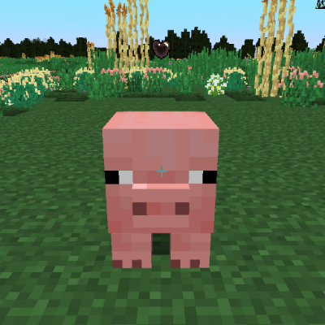

축산업
가축은 플레이어가 길들이고 교배할 수 있는 동물들입니다. 가축은 수컷과 암컷이 있습니다. 몇몇 동물들은 암수를 명확히 구분할 수 있습니다. 예를 들면, 수퇘지에게는 엄니가 있습니다.
가축은 나이가 있습니다. 처음에는 새끼로 태어납니다. 새끼들은 작고 플레이어에게 뭔가 해줄 수 없습니다. 특정 기간 후, 그들은 성체가 됩니다. 성체들은 교배하거나 우유를 짜는 등의 일을 할 수 있습니다. 충분히 교배하고 작업한 이후에 동물은 늙습니다. 늙은 동물들은 그들의 고기를 제외하면 쓸모가 없습니다.

이 수소는 늙어서 교배할 수 없으며, 가죽이 얼룩지고 눈이 흐립니다.
가축에게는 먹이를 주어서 친밀도를 높일 수 있습니다. 각각의 동물들은 선호하는 음식이 있습니다. 동물에게 먹이를 주려면, Shift 키를 누르고 음식을 든 채로 오른쪽 버튼을 누르면 됩니다.
가축에는 당신과 가축의 친밀도를 표시하는 친밀도 게이지가 있습니다. Shift 키를 누르고 동물을 바라보면 확인할 수 있습니다.
먹이를 주지 않는다면 친밀도가 매일 약간씩 깎입니다. 친밀도 게이지의 하트 모양에 흰색 테두리가 생길 때까지 친밀도를 올리면, 친밀도가 더 이상 깎이지 않습니다.

성체 가축은 친밀도를 끝까지 높일 수는 없습니다. 최대 친밀도에 도달하면 하트 모양에 빨간색 테두리가 생깁니다. 아기들은 100%까지 친밀도를 높일 수 있습니다.
포유류는 임신을 하는 가축입니다. 30% 이상의 친밀도를 가졌고 당일에 먹이를 준 성체 포유류는 근처에 다른 성별의 동물이 있으면 짝짓기를 할 수 있습니다. 암컷 동물은 임신하며, 수정한 이후 특정 기간 후 새끼를 낳습니다.
예시로는 돼지가 있습니다.
털이 있는 포유류는 성체이고 당신과 충분히 친밀하다면 깎을 수 있습니다. 예시로는 양, 알파카, 그리고 사향소가 있습니다.
우유를 짤 수 있는 포유류는 암컷에게 양동이로 우클릭을 하여 우유를 얻을 수 있습니다. 예시로는 염소, 소, 그리고 야크가 있습니다.
둥지 상자


난생 동물은 포유류가 아니며, 알을 낳아서 번식합니다. 알을 낳기 위해는 둥지 상자가 필요합니다.
예시로는 오리, 메추라기, 그리고 닭이 있습니다.

뜨거움****
알은 굽거나 삶아 먹을 수 있습니다. 수컷 난생동물은 암컷을 수정시킬 수 있으며, 수정된 암컷은 둥지 상자에 알을 낳습니다. 알에는 부화하기까지 얼마나 걸리는지에 대한 툴팁이 있습니다.

말속 동물들은 타거나 길들일 수 있습니다. 그들을 타기 위해서는 15% 이상의 친밀도가 필요합니다.
타기 위해서는 가죽으로 만드는 안장이 필요합니다. 말속 동물에는 노새, 당나귀, 그리고 말이 있습니다.
다음 페이지에는 가축들의 종류가 있습니다.
돼지
돼지는 기온이 -10°C 이상 35°C 이하이고, 강수량이 200mm 이상인 온화한 숲에서 생성됩니다. 돼지는 특별한 점 없는 평범한 포유류입니다. 돼지는 아무 음식이나 먹으며 썩은 음식도 먹을 수 있습니다. 1-10마리의 새끼를 19일의 임신 후 낳으며, 80일 뒤에 성체가 됩니다. 최대 6번 새끼를 가질 수 있습니다.
돼지.
소
소는 기온이 -10°C 이상 35°C 이하이고, 강수량이 250mm 이상인 대부분의 기후에서 생성됩니다. 소는 우유를 짤 수 있습니다. 소는 곡물만 먹으며 썩은 음식도 먹을 수 있습니다. 1-2마리의 새끼를 58일의 임신 후 낳으며, 192일 뒤에 성체가 됩니다. 우유를 짜지 않는다면 최대 13번 새끼를 가질 수 있으며, 번식하지 않는다면 최대 128번 우유를 짤 수 있습니다. 우유는 매일 짤 수 있습니다
소.
염소
염소는 기온이 -12°C 이상 25°C 이하이고, 강수량이 300mm 이상인 온화한 기후에서 생성됩니다. 염소는 우유를 짤 수 있습니다. 염소는 곡물, 과일, 그리고 채소를 먹으며 썩은 음식도 먹을 수 있습니다. 1-2마리의 새끼를 32일의 임신 후 낳으며, 96일 뒤에 성체가 됩니다. 우유를 짜지 않는다면 최대 6번 새끼를 가질 수 있으며, 번식하지 않는다면 최대 60번 우유를 짤 수 있습니다. 우유는 3일마다 짤 수 있습니다.
염소.
야크
야크는 기온이 -11°C 이하이고, 강수량이 100mm 이상인 추운 기후에서 생성됩니다. 야크는 우유를 짤 수 있습니다. 야크는 신선한 곡물만 먹습니다. 1마리의 새끼만을 64일의 임신 후 낳으며, 180일 뒤에 성체가 됩니다. 우유를 짜지 않았다면 최대 23번 새끼를 가질 수 있으며, 번식하지 않는다면 최대 230번 우유를 짤 수 있습니다, 우유는 매일 짤 수 있습니다.
야크.
알파카
알파카는 기온이 -8°C 이상 20°C 이하이고, 강수량이 250mm 이상인 시원한 기후에서 생성됩니다. 알파카는 털을 깎을 수 있습니다. 알파카는 곡물과 과일을 먹습니다. 1-2마리의 새끼를 36일의 임신 후 낳으며, 98일 뒤에 성체가 됩니다. 털을 깎지 않는다면 최대 13번 새끼를 가질 수 있으며, 번식하지 않는다면 최대 128번 털을 깎을 수 있습니다. 털은 6일마다 자라납니다.
알파카.
양
양은 기온이 0°C 이상 35°C 이하이고, 강수량이 70mm 이상 30mm 이하인 건조한 기후에서 생성됩니다. 양은 털을 깎을 수 있습니다. 양은 곡물을 먹습니다. 1-2마리의 새끼를 32일의 임신 후 낳으며, 56 뒤에 성체가 됩니다. 털을 깎지 않는다면 최대 6번 새끼를 가질 수 있으며, 번식하지 않는다면 최대 60번 털을 깎을 수 있습니다. 털은 9일마다 자라납니다.
양.
사향소
사향소는 기온이 0°C 이상 25°C 이하이고, 강수량이 100mm 이상인 온화한 기후에서 생성됩니다. 사향소는 털을 깎을 수 있습니다. 사향소는 곡물을 먹습니다. 1마리의 새끼만을 64일의 임신 후 낳으며, 168일 뒤에 성체가 됩니다. 털을 깎지 않는다면 최대 16번 새끼를 가질 수 있습니다.
사향소.
닭
닭은 기온이 14°C 이상이고, 강수량이 225mm 이상인 따뜻한 숲에서 생성됩니다. 닭은 난생동물입니다. 닭은 곡물, 과일, 채소, 그리고 씨앗을 먹으며 썩은 음식도 먹을 수 있습니다. 달걀은 8일 후에 부화하며 24일 뒤에 성체가 됩니다. 알은 최대 100번, 30시간마다 낳을 수 있습니다.
닭.
오리
오리는 기온이 -25°C 이상 30°C 이하이고, 강수량이 100mm 이상인 평원에서 생성됩니다. 오리는 난생동물입니다. 오리는 곡물, 과일, 채소, 빵, 그리고 씨앗을 먹습니다. 오리 알은 8일 후에 부화하며 32일 뒤에 성체가 됩니다. 알은 최대 72번, 32시간마다 낳을 수 있습니다.
오리.
메추라기
메추라기는 기온이 -15°C 이상 15°C 이하이고, 강수량이 200mm 이상인 추운 기후에서 생성됩니다. 메추라기는 난생동물입니다. 메추라기는 곡물, 과일, 채소, 그리고 씨앗을 먹으며 썩은 음식도 먹을 수 있습니다. 메추라기 알은 8일 후에 부화하며 22일 뒤에 성체가 됩니다. 알은 최대 48번, 28시간마다 낳을 수 있습니다.
메추라기.
당나귀
당나귀는 기온이 -15°C 이상이고, 강수량이 130mm 이상 40mm 이하인 습한 평원에서 생성됩니다. 당나귀는 말속 동물이며 상자를 달 수 있습니다. 당나귀는 곡물과 과일을 먹습니다. 1마리의 새끼만을 19일의 임신 후에 낳으며, 80일 뒤에 성체가 됩니다. 최대 6번 새끼를 가질 수 있습니다.
당나귀.
노새
노새는 기온이 -15°C 이상이고, 강수량이 130mm 이상 40mm 이하인 습한 평원에서 생성됩니다. 노새는 말속 동물이며 상자를 달 수 있습니다. 노새는 곡물과 과일을 먹습니다. 또한 노새는 말과 당나귀의 잡종으로 번식할 수 없으며 80일 뒤에 성체가 됩니다.
노새.
말
말은 기온이 -15°C 이상이고, 강수량이 130mm 이상 40mm 이하인 평원에서 생성됩니다. 말은 말속 동물입니다. 말은 곡물과 과일을 먹습니다. 1마리의 새끼만을 19일의 임신 후에 낳으며, 80일 뒤에 성체가 됩니다. 최대 6번 새끼를 가질 수 있습니다.
말.